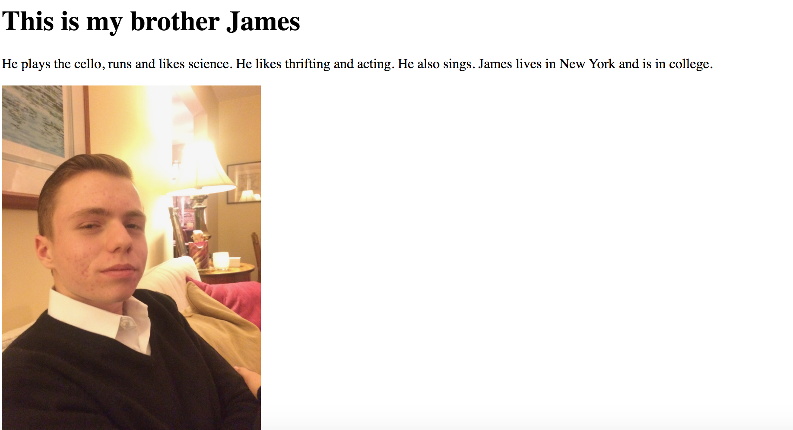
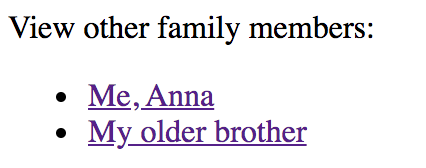

Welcome to my portfolio of this semester's web design projects. This semester, we worked primarily with html and css. Since I was learning the coding languages as we created projects, the first projects are much more simplistic than the later ones. From paragraphs and relative links, to complicated forms and animations, my development of skills is very clear from my informative, yet simple, Bison document, to my Javascript-reliant Buzzfeed Quiz with interactive responses and hoverable elements. Below, you can access and learn about the processes behind each project, or just click the links above for quick access.
Family Tree
As one of the first projects of the year, the family tree project involved using hyperlinks to navigate between very basic webpages. This particular project included links to information about many of my family members.
In the three documents, there is a picture and description of each of my siblings. You can find this on the above navigation bar under the name "Family Tree." Enjoy!
Here is an example of the very basic navigation bar used.
Bison Project
Environmental Call to Action
It even includes
a short video:
This webpage was a lot
of fun! It was one of
the first examples using
lists and multimedia. By
this point, I was
getting
much more comfortable
with my coding skills.
Fall Project
On interesting feature is the
dropdown bar. Here is the
dropdown bar, both being
hovered over and when it is still.
Ornament Collection Project
Buzzfeed Quiz
Anonymity
My most recent project, the Anonymity assignment involved working with a partner to discuss a topic relating to technology and the Internet. Our topic was Anonymity, and my partner was Ananya. This project is the first of mine that uses animations and transitions, as seen by the mask that fades into words on the homepage. It also uses an audio file. The project has multiple pages, though a grey color scheme is consistent throughout.
Here is the mask. As you will see on the webpage, this mask fades into some text. This was very difficult to maneuver and involved lots of trial and error to get everything to line up correctly.